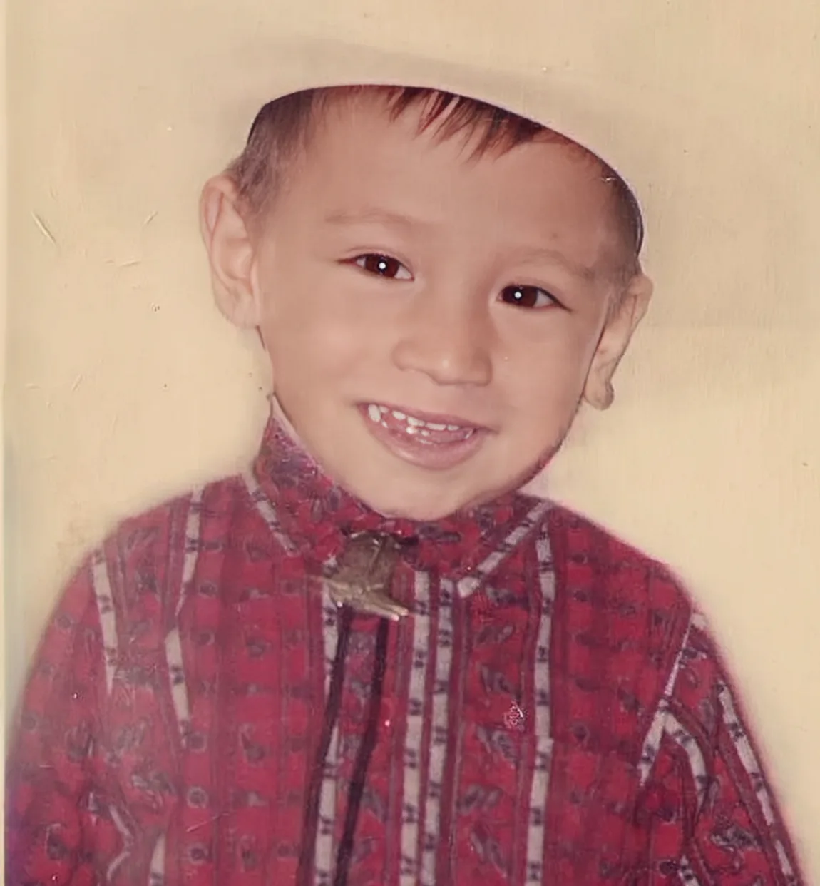
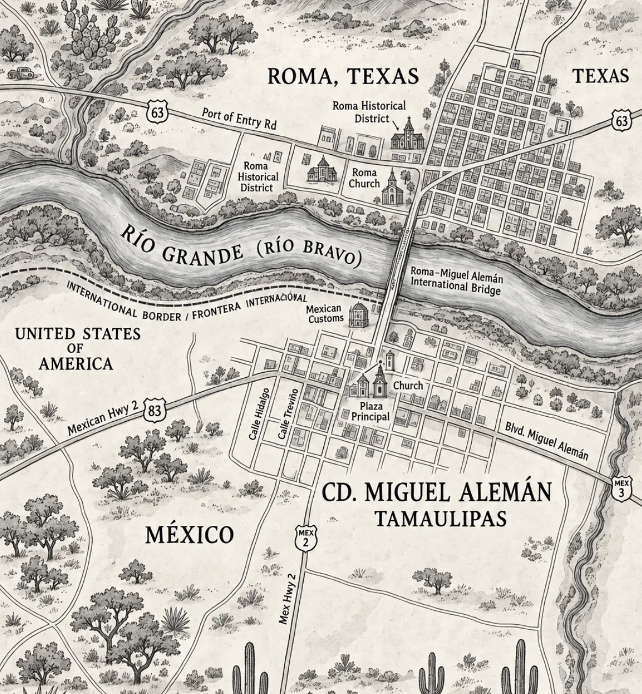

Noah’s Ark
I brought missing- and found-pet reporting to the first screen, then reorganized the report around useful details and sharing.
Read case studyI’m a UX/UI and product designer who researches where people get stuck and designs the relief.
I brought missing- and found-pet reporting to the first screen, then reorganized the report around useful details and sharing.
Read case studyI redesigned how patients discover Pablo, Lino’s existing text-and-phone assistant, starting with refill and medication questions.
Read case studyI researched two recurring support tasks in Salesforce and designed guided assistant flows that help associates find the next step without leaving their work.
Read case studyFRONTERA
Growing up in Roma, Texas taught me that access is never a given. People move between Spanish and English without thinking about it. A phone may be the only way a family gets online, and an ordinary trip to the bank or a clinic can take most of an afternoon.
The border is not a niche audience. It is where a product’s assumptions are exposed.


LOCATION
Roma sits on a bluff over the Río Grande, brick buildings from the 1850s still standing on the plaza. I spent my childhood translating — forms, appointment calls, warranty cards — for people who were perfectly capable and just weren’t being spoken to in their own language.
That is the job I do now, with better tools. I run the research, sketch the flows, build the interface in Figma, and sit with real users until the thing works without me in the room.